Milhões de anos antes da humanidade sequer existir, os Necrons governaram a galáxia. Para vencer uma guerra contra deuses, eles trocaram suas almas e corpos de carne por estruturas imortais de metal vivo através do processo de Biotransferência. Agora, após um sono de eras, as Dinastias Necron estão despertando para retomar seu império.
Eles não lutam por ódio ou fé, mas por um direito de propriedade ancestral. Para um Necron, as outras raças são apenas pragas que infestaram seus jardins enquanto eles dormiam, e a hora da colheita finalmente chegou.
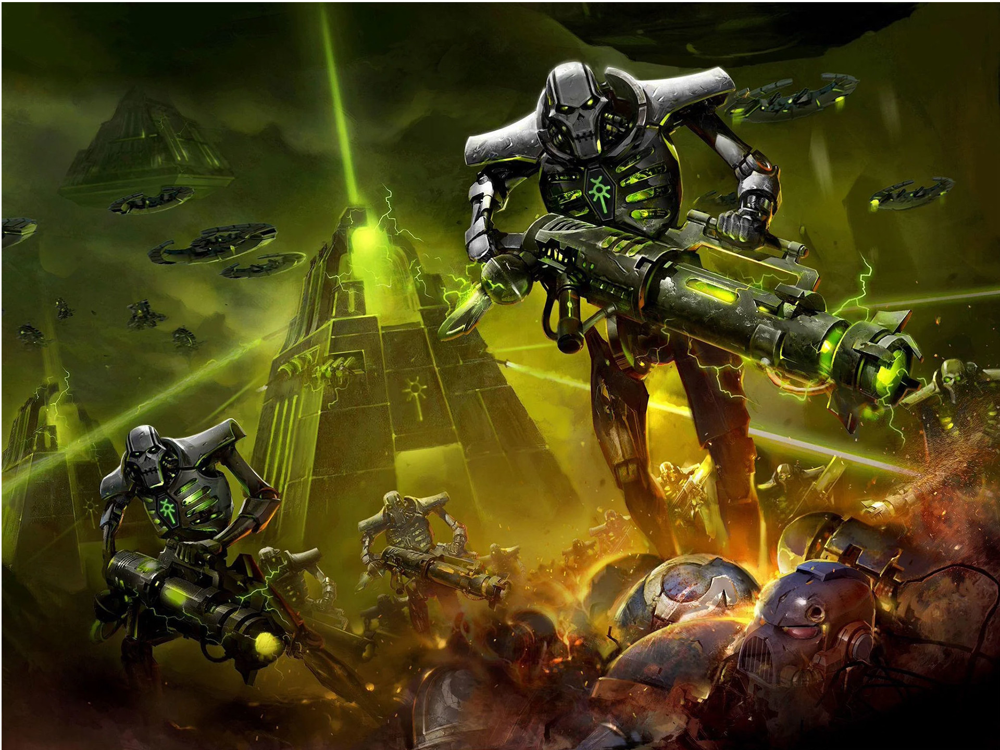
Necron Warrior
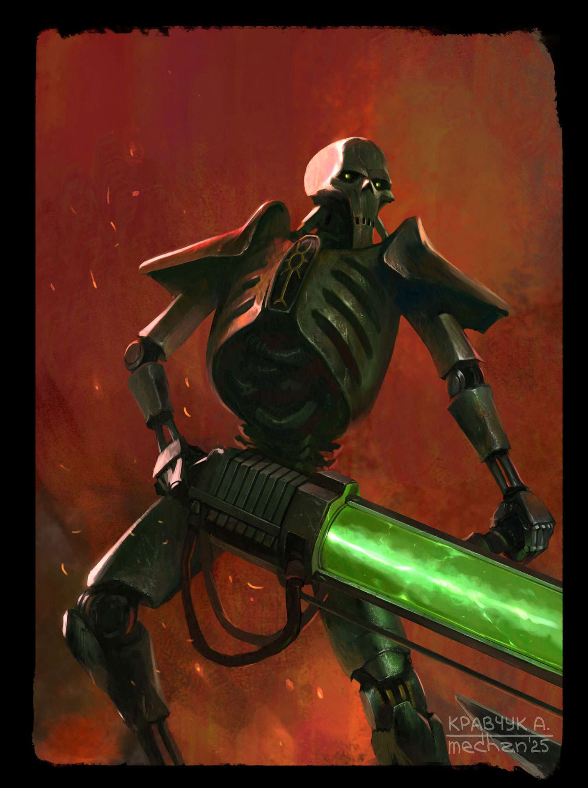
Immortal
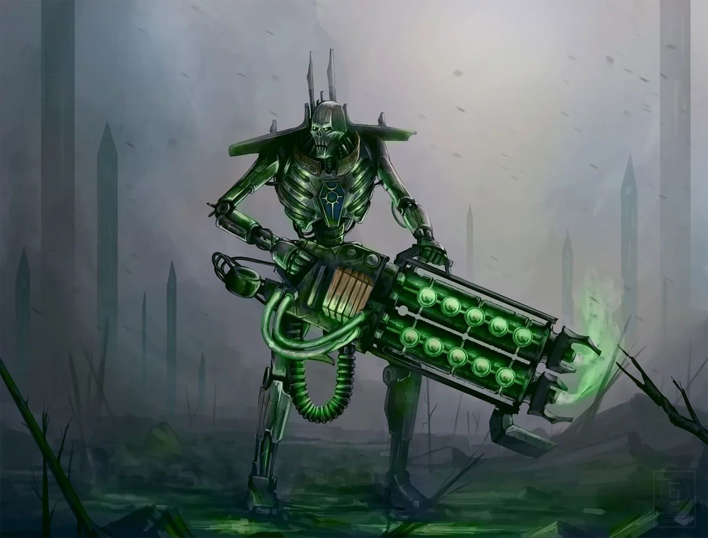
Overlord
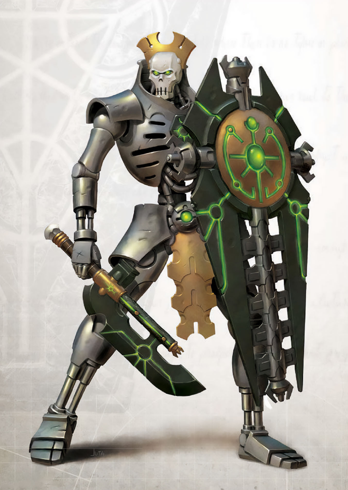
Lychguard
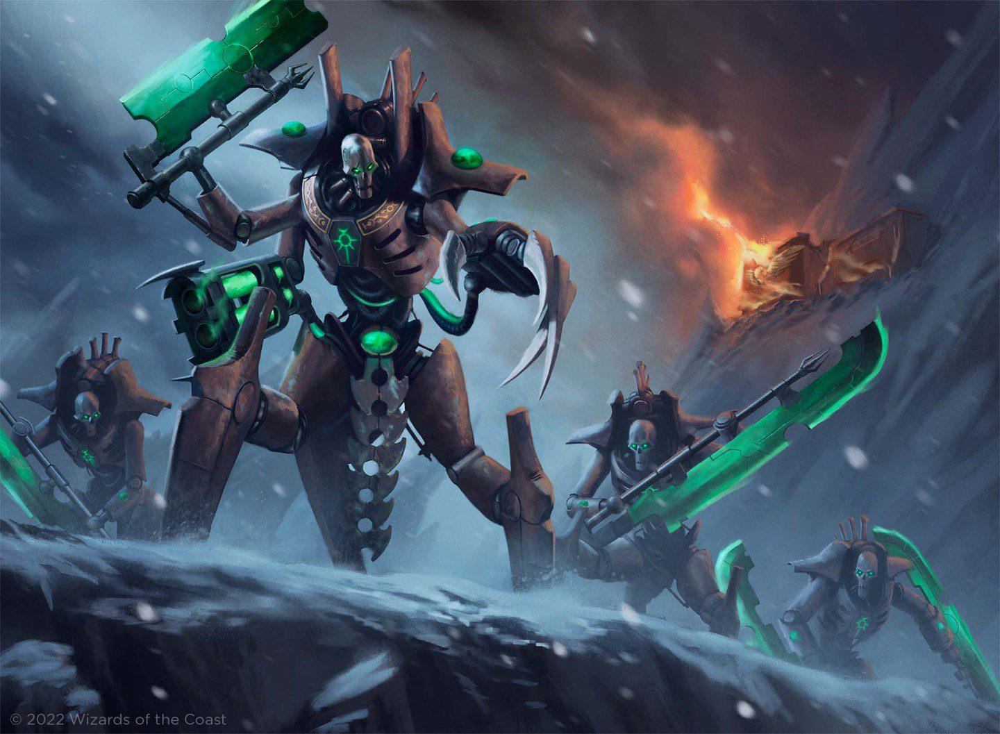
Canoptek Wraith
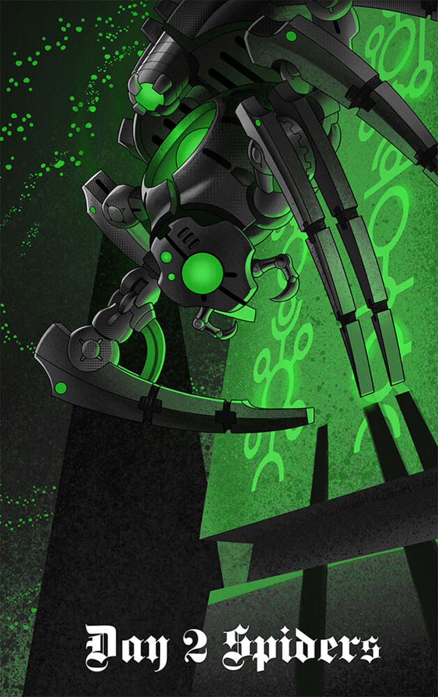
Deathmark
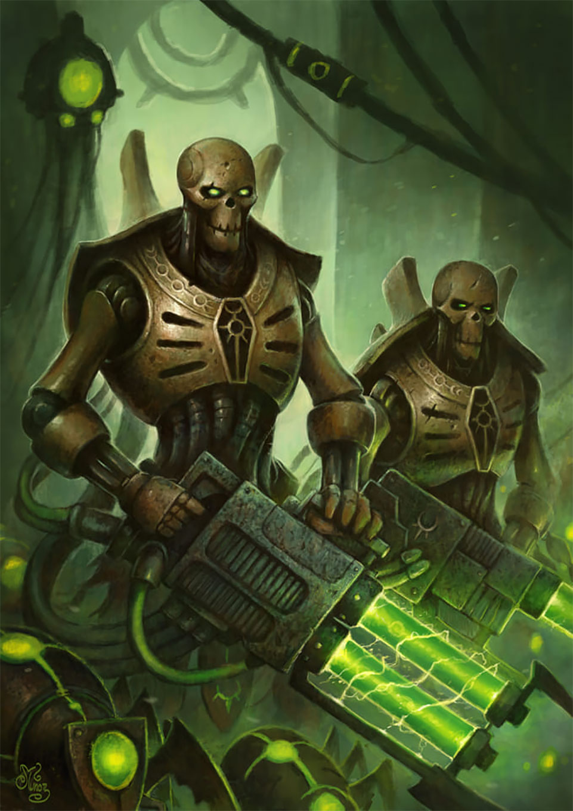
Skorpekh Destroyer
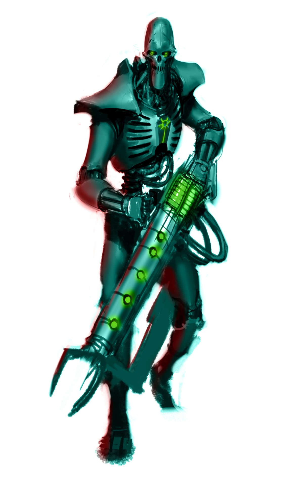
Ghost Ark
O armamento Necron utiliza a tecnologia Gauss, que projeta feixes de energia
capazes de desintegrar as camadas moleculares do alvo, reduzindo tanques e soldados a átomos em
segundos.
• Lâminas Hiperfásicas: Vibram entre dimensões, ignorando armaduras físicas.
• Cajados de Luz: Canalizam o poder bruto das estrelas com precisão matemática.
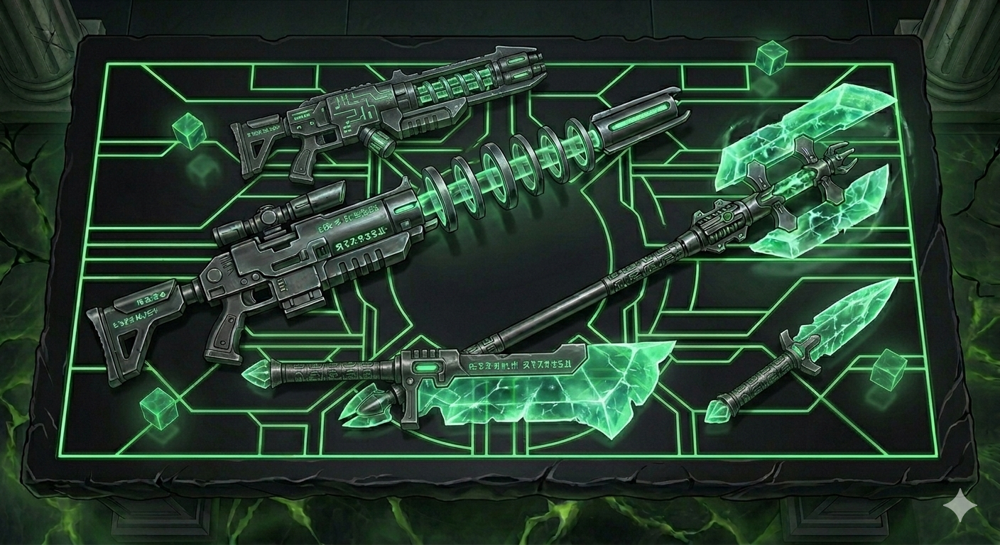
A maior defesa de um Necron é o seu próprio corpo feito de Necrodermis, um metal autorreparável que flui como líquido para fechar feridas instantaneamente. Mesmo danos catastróficos iniciam uma 'translocação de emergência', teletransportando os restos de volta para as tumbas para reconstrução.
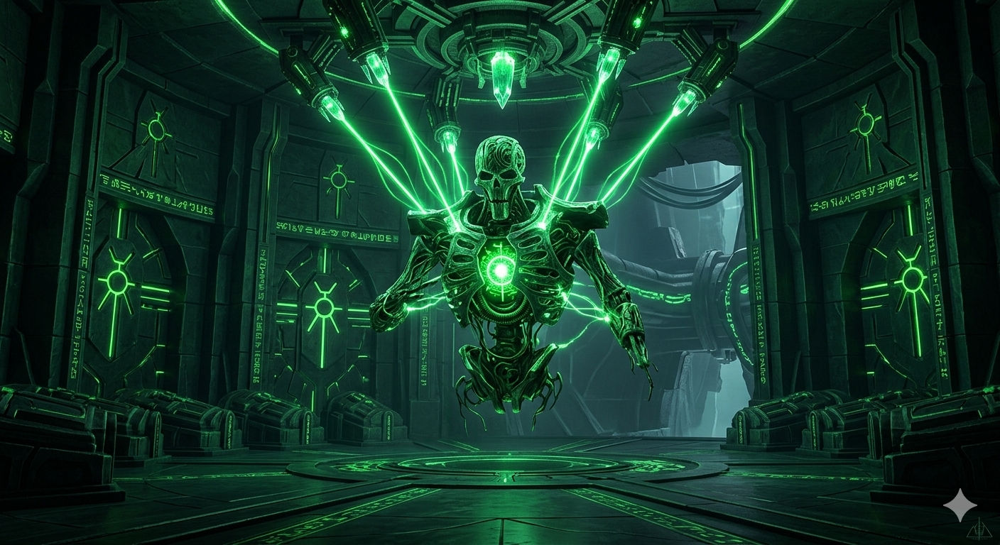
Com o surgimento de líderes niilistas como Nekrosor Ammentar, o objetivo Necron mudou de uma simples reconquista para uma purificação galáctica. Eles buscam silenciar o Warp e eliminar todas as formas de vida orgânica para restaurar a galáxia à sua ordem original: um silêncio eterno e metálico.
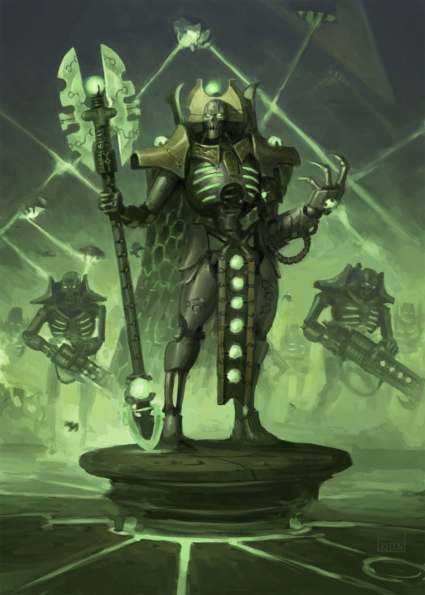